Three directions · One fixed room · 21 October 2026
Unit 408 — three bedroom directions (J, K, L)
Three new, fully sourced directions for Isah and Ivan, distinct from every earlier scheme: J White Gallery, a white room with one lilac-mauve accent, hidden valance light and a gallery of small frames; K Stitched Oak, a box-stitched headboard, natural oak and thin black lines; L Flax Wine, flax, wine and wicker around a mahogany spindle bed with pine and cane. Every visible piece is a real catalogue product; technical essentials stay common by agreement.
A comparison for one chosen scheme. Quantities and budgets apply to that scheme. Star (☆) any piece in the schedules to collect it under Picks.
White Gallery
₱286,000–₱340,000Planning range Direction KStitched Oak
₱593,000–₱647,000Planning range Direction LFlax Wine
₱322,000–₱376,000Planning rangeThe fixed brief
What every scheme must satisfy
- 01
MANDATORY: finished 50 mm mattress, 72 × 78 inches (1828.8 × 1981.2 mm), on continuous flat support with no exposed slats or gaps. No thick mattress, topper or box spring.
- 02
All prices assume new purchases. Three distinct sets of visible furniture, bedside lamps, fixtures, mirrors, rugs, textiles, plants and decor. Matching bedside pairs within each design.
- 03
Closed practical bedside storage, armrests on every chair, compact console with sourced decor. No extra generic styling objects.
- 04
75-inch wall TV baseline; 65-inch minimum, 85-inch optional pending price and clearance checks. 65-inch reference saves ₱12,000 in merchandise before contingency.
- 05
Split AC at the window-side corner of the TV wall, with airflow directed away from sleepers. Installer must verify location and capacity.
- 06
Mirror on the wall return between the two perpendicular doors. Preserve native irregular geometry, both doors, closet and warm narrow-block parquet.
- 07
Common technical essentials are owner-approved. Existing Davies Beige blackout/voile treatment and concealed old window AC remain a fixed room requirement.
Direction J
White Gallery
Grey diamond-tufted Gibson bed in a white room: white-painted 861 two-drawer bedsides and Amber shaker console, chalk-ivory FAGERBACKEN wing chair, white Vesper quilt and scalloped shams, six small white Jahn frames hung as a family-photo gallery, and architectural light only (Alphalux LED wash in the curtain valance + the flush KÄRRNOCKA disc, quiet white Kolya ceramic lamps). Lilac-mauve is the only colour: purple chrysanthemums, a mauve Dishan vase and a blush-mauve Malka cushion. White dominant, lilac accent, hidden light.

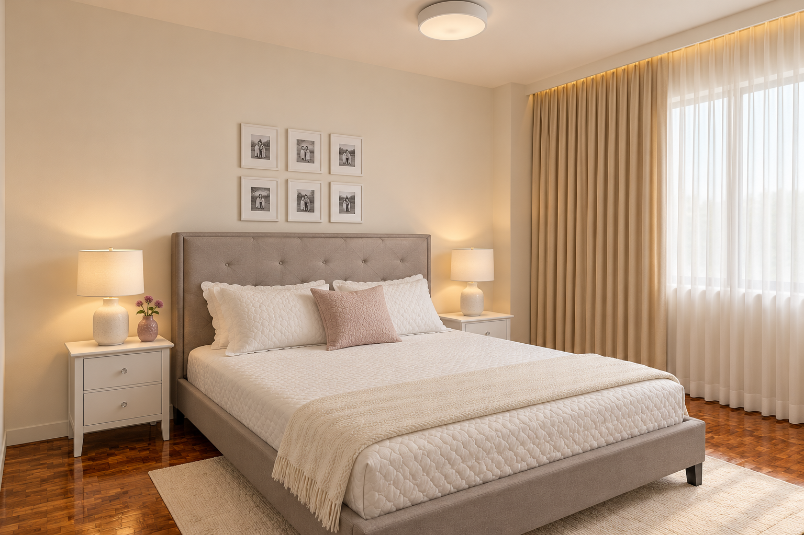

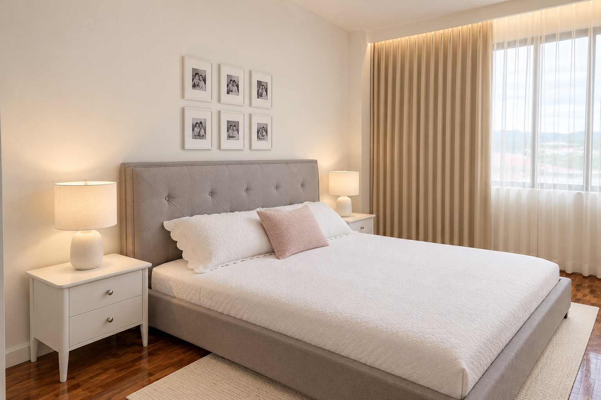

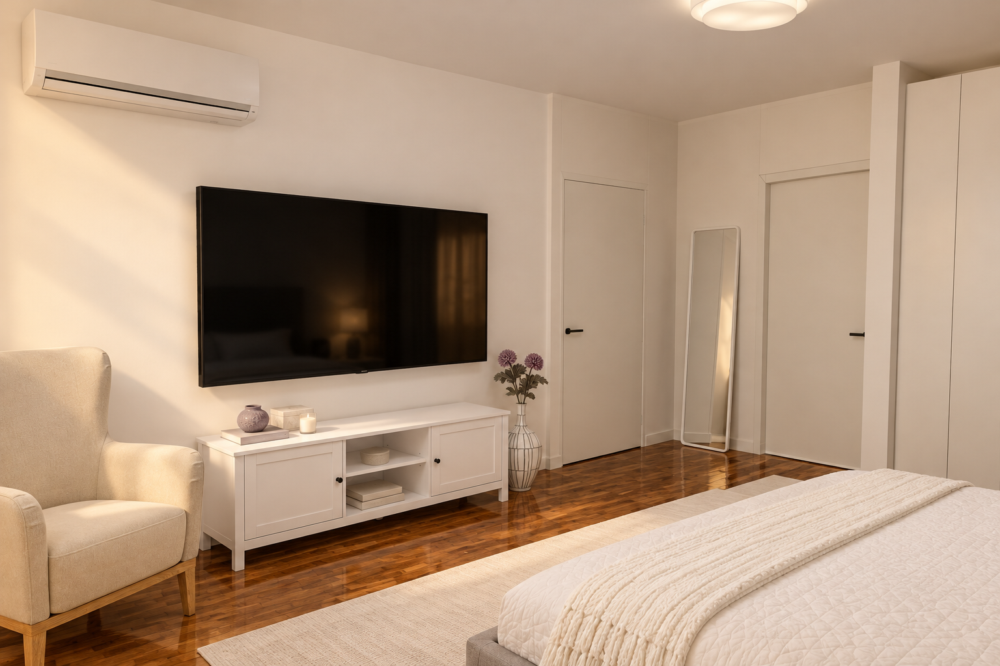
Style renders are AI images (Codex image generation, sketch-to-render) painted over the dimension-led model views below, with the original parquet photo and the supplier product photos as references: a style interpretation of each scheme, not a dimension certification; check every piece against the schedule.

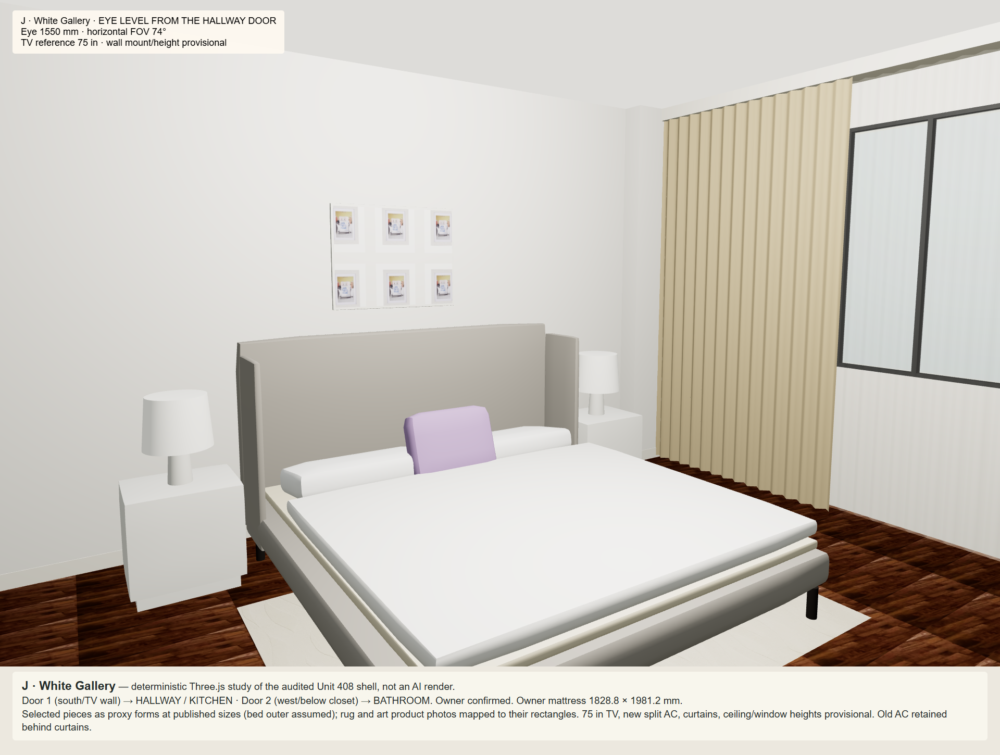

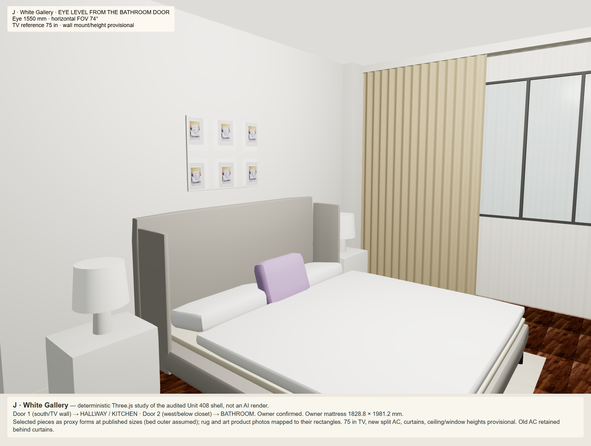

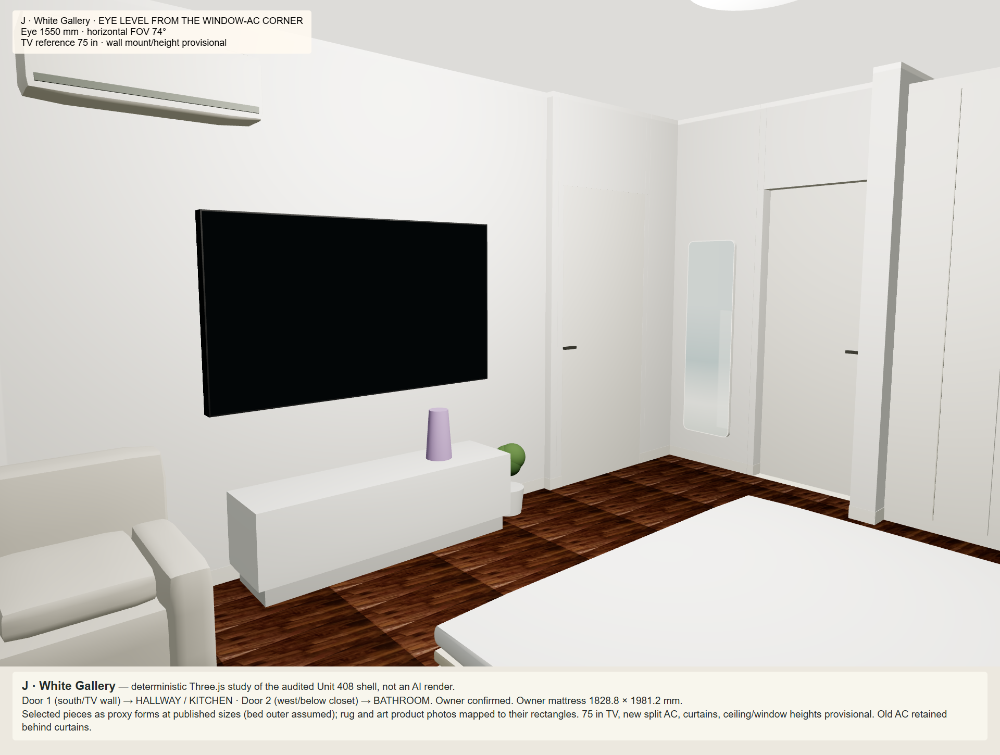
Model views are deterministic Three.js views of the audited Unit 408 shell (parquet, curtains, window, doors, closet, 75 in TV, new split AC) with the selected pieces as proxy forms at published or assumed sizes and the rug and art photos mapped to their rectangles; not AI renders, finishes approximate.
Elevations are scaled supplier-photo collages on the native wall, not renders; heights ILLUS. The reference board contains supplier product photographs.

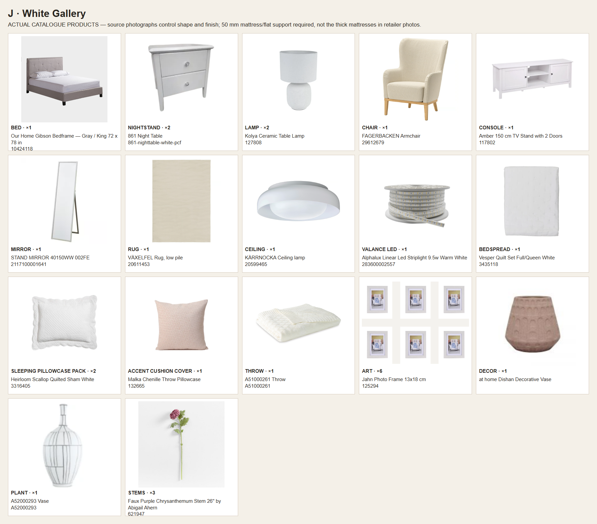

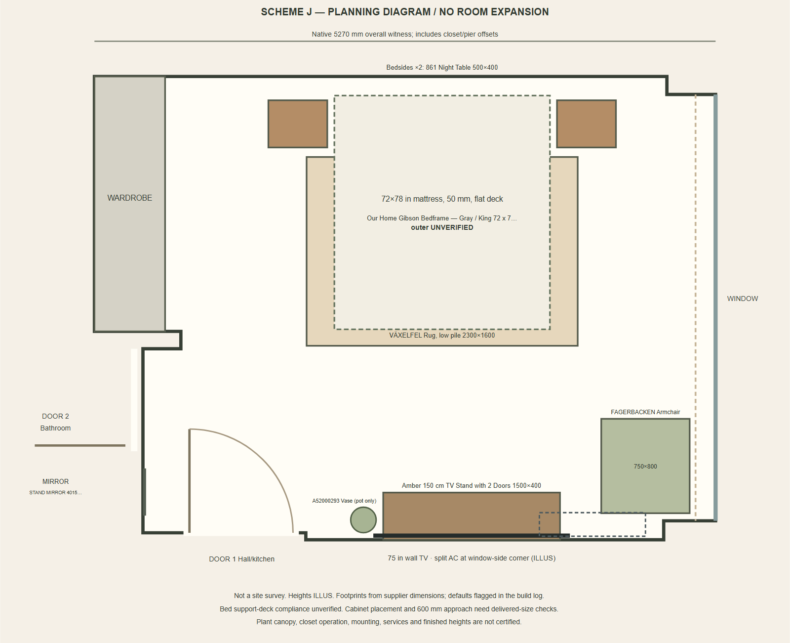
Space & fit
- 861 bedsides 500 × 400 mm; Amber 150 console 1500 × 400 × 460 mm.
- FAGERBACKEN dimensions unpublished; layout uses the 750 × 800 mm default — confirm. Gibson King outer size unpublished; fit uses the mattress envelope + 160 mm.
- Nitori stand mirror 400 mm wide leans against the 690 mm door return (listed "unavailable online").
Every scheduled itemDirection J · selected pieces16 rows
16 scheduled items
| Starred | Piece & exact variant | Qty / scheme | Unit price | Line price | Source & fulfillment |
|---|---|---|---|---|---|
bedOur Home Gibson Bedframe — Gray / King 72 x 78 inGray / King 72 x 78 in Dimensions & source notesNotes: Grey upholstered headboard with diamond button tufting and a fully upholstered base on dark block legs; laminated-wood frame with kiln-dried rails and legs. King Gray was listed available=false at the catalogue read (AVAILABILITY GATE). Support type not published → UNVERIFIED, REQUIRED-FLAT-DECK applies. King outer size not published. Specified with the custom 50 mm mattress (1828.8 × 1981.2 mm) on a continuous flat deck; no box spring, topper or thick pad. Price basis: Our Home Shopify product JSON, King 72×78 variant |
1J | ₱27,475Source price: 2026-10-21 | ₱27,475 | Supplier JSON available=False (read 20 Oct 2026) | Cebu delivery unconfirmedSupplier page ↗ | |
nightstand861 Night TableSKU 861-nighttable-white-pcf Dimensions & source notesDimensions (mm): width: 500; depth: 400; height: 510 Notes: Solid wood, painted white all over; two drawers (fully closed), tapered legs, softly rounded overhanging top. Knobs are faceted clear crystal - swap for white ceramic knobs if they read too glam. Alt MALM 2-drawer white (acrylic-painted particleboard, 400x480x550, PHP 2,999). Price basis: Published price for the selected listing variant |
2J | ₱3,200Source price: 2026-09-10 | ₱6,400 | In stock according to source | Cebu delivery: unconfirmed | price date 2026-09-10 | Furniture ManilaSupplier page ↗ | |
lampKolya Ceramic Table LampSingle published variant; SKU 127808 Dimensions & source notesNotes: Photo: speckled matte white ceramic barrel base, white linen drum shade, all-white. Availability 'catalog listed' (not confirmed in stock). Alt L82 Klim Ceramic Mini (white ceramic + white shade, PHP 336). Price basis: Official public catalog price in PHP for the selected exact variant; no member discount inferred. |
2J | ₱1,090Source price: 2026-09-10 | ₱2,180 | Catalog listed | Cebu delivery: unconfirmed | price date 2026-09-10 | Mandaue FoamSupplier page ↗ | |
 chairFAGERBACKEN ArmchairFAGERBACKEN Armchair, Knäbäck light beige; article 29612679 Dimensions & source notesNotes: Fully upholstered wing armchair in a chalk/ivory woven fabric; padded arms; low solid-oak base frame and legs (clear lacquer). Pocket-spring seat. Alt Ucean Arm Chair (Mandaue Foam, order the WHITE rattan frame with light-grey cushion; 570x590x780, PHP 1,960, catalogue listed). Price basis: Official Philippine product-page price for the complete selected listing/variant; included quantity follows the exact specification variant. Delivery and assembly are additional. |
1J | ₱22,500Source price: 2026-09-10 | ₱22,500 | In stock according to source | Cebu delivery: unconfirmed | price date 2026-09-10 | IKEASupplier page ↗ | |
consoleAmber 150 cm TV Stand with 2 DoorsSKU 117802; White Dimensions & source notesDimensions (mm): width: 1500; depth: 400; height: 460 Notes: White-painted top, painted pine legs; two shaker-panel doors (closed) on either side of an open centre with a shelf; small black knobs (swap to white). Alt BYÅS (high-gloss white, 1600x420x450, PHP 9,999). Price basis: per listed item; selected exact variant |
1J | ₱4,225Source price: 2026-09-08 | ₱4,225 | In stock according to source | Cebu delivery: unconfirmed | price date 2026-09-08 | Mandaue FoamSupplier page ↗ | |
 mirrorSTAND MIRROR 40150WW 002FESingle listed variant; SKU 2117100001641; full-length standing/floor mirror Dimensions & source notesDimensions (mm): width: 400; depth: 35; height: 1500 Notes: Nitori stand mirror 40150 in white: thin whitewash MDF frame, full length, 400 × 1500 mm, leans on a fold-out strut against the door return (photo). Listed "unavailable online" — AVAILABILITY GATE; fallback any 400-500 mm white leaning mirror. Price basis: Official online store price for this exact variant (products.json variant 47331051077844: price 1790, compare-at 1790); per listed unit as titled |
1J | ₱1,790Source price: 2026-10-20 | ₱1,790 | Unavailable online | Cebu delivery: unconfirmed | price date 2026-10-20 | NitoriSupplier page ↗ | |
 rugVÄXELFEL Rug, low pileVÄXELFEL Rug, low pile, off-white, 160x230 cm; article 20611453 Dimensions & source notesDimensions (mm): width: 1600; depth: 2300 Notes: Photo: plain off-white low pile, recycled polyester. Available. Alt R93 IKEA PELARKÖRSBÄR (160x230 low pile, tonal light-beige leaf relief, PHP 7,999). Price basis: Official Philippine product-page price for the complete selected listing/variant; included quantity follows the exact specification variant. Delivery and assembly are additional. |
1J | ₱3,499Source price: 2026-09-10 | ₱3,499 | In stock according to source | Cebu delivery: unconfirmed | price date 2026-09-10 | IKEASupplier page ↗ | |
 ceilingKÄRRNOCKA Ceiling lampKÄRRNOCKA Ceiling lamp, white, 37 cm; article 20599465 Dimensions & source notesDimensions (mm): height: 130 Notes: Photo: flush white stepped/layered polypropylene diffuser on a white steel bracket, no drop. Available. Alt P40 IKEA FRIHULT ceiling lamp (semi-flush opal glass globe on anodised cup, H250, PHP 1,499). Price basis: Official Philippine product-page price for the complete selected listing/variant; included quantity follows the exact specification variant. Delivery and assembly are additional. |
1J | — | — | Retired 23 Oct 2026 — no added ceiling light (Ivan: "we are not going to add more ceiling lights"). Not in the budget.Supplier page ↗ | |
valance ledAlphalux Linear Led Striplight 9.5w Warm WhiteSHV/ST/0/1/0 9.5W 3000K WW 220V double line; item 283600002557 Dimensions & source notesNotes: Lighting and electrical / LED strip light, 3000K warm white, 220V double-line (no low-voltage driver needed per listing). Pair with Alphalux Linear Surface Aluminum Profile 2 m (PHP 230 each) as a diffuser channel inside the valance. Availability online, Cebu stock unconfirmed. Alt IKEA ORMANÄS smart LED light strip 4 m (PHP 1,999, in stock, dimmable). Price basis: Official online store price for this exact listing/variant on 2026-10-20 (gql-search-led-strip.json); per listed unit as titled |
1J | ₱620Source price: 2026-10-20 | ₱620 | online_variant_available_cebu_stock_unconfirmed | Cebu delivery: unconfirmed | price date 2026-10-20 | AlphaluxSupplier page ↗ | |
bedspreadVesper Quilt Set Full/Queen WhiteSingle listed variant; SKU 3435118 Dimensions & source notesNotes: JQueen Vesper quilt set in White: thin cotton quilt with tiny cross-stitch tacking (photo), no loft. Listed Full/Queen only; on the thin 50 mm King mattress it covers the top with about 220 mm drop each side. Price basis: Official online store price for this exact variant (products.json variant 47976448426123: price 7600, compare-at 9500); per listed unit as titled |
1J | ₱7,600Source price: 2026-10-20 | ₱7,600 | online_variant_available_cebu_stock_unconfirmed | Cebu delivery: unconfirmed | price date 2026-10-20 | JQueenSupplier page ↗ | |
sleeping pillowcase packHeirloom Scallop Quilted Sham WhiteSingle listed variant; SKU 3316405 Dimensions & source notesNotes: White 100% cotton quilted sham with a scalloped edge, reversing to plain cotton (photo); sold singly, so qty 2. Price basis: Official online store price for this exact variant (products.json variant 42824610742411: price 5450, compare-at none); per listed unit as titled |
2J | ₱5,450Source price: 2026-10-20 | ₱10,900 | online_variant_available_cebu_stock_unconfirmed | Cebu delivery: unconfirmed | price date 2026-10-20 | Pottery BarnSupplier page ↗ | |
accent cushion coverMalka Chenille Throw PillowcasePink; SKU 132665 Dimensions & source notesNotes: 45x45 cm chenille jacquard with a small geometric weave; photo shows a pale blush-mauve (listed Pink / Ice). NOT true lilac: the catalogue has no lilac cushion with a photo. Price basis: Official public catalog price in PHP for the selected exact variant; no member discount inferred. |
1J | ₱265Source price: 2026-09-10 | ₱265 | Catalog listed | Cebu delivery: unconfirmed | price date 2026-09-10 | Mandaue FoamSupplier page ↗ | |
throwA51000261 ThrowA51000261 Throw; manufacturer SKU A51000261; Default Title; White Dimensions & source notesDimensions (mm): width: 700.024; depth: 2350.008; height: 9.906 Notes: White cotton, 70x235 cm (bed-runner proportion, laid across the foot) Price basis: Per exact listed official Philippine storefront variant; verify quantity/configuration in listing. Cebu branch quotation is not established. |
1J | ₱3,900Source price: 2026-09-10 | ₱3,900 | online_variant_available_cebu_stock_unconfirmed | Cebu delivery: unconfirmed | price date 2026-09-10 | AshleySupplier page ↗ | |
artJahn Photo Frame 13x18 cmWhite; SKU 125294 Dimensions & source notesDimensions (mm): width: 810; depth: 20; height: 620 Notes: Six Jahn 13 × 18 cm photo frames in White (MDF, paper wrap, white mat) hung as a 3 × 2 gallery grid over the headboard (about 810 × 620 mm overall) holding the owners' own black-and-white family photographs. IKEA YLLEVAD was the curator pick but has no fetchable photo; Jahn keeps the small-frame gallery. Price basis: Official public catalog price in PHP for the selected exact variant; no member discount inferred. |
6J | ₱66.50Source price: 2026-09-10 | ₱399 | Catalog listed | Cebu delivery: unconfirmed | price date 2026-09-10 | Mandaue FoamSupplier page ↗ | |
decorat home Dishan Decorative VaseSmall, Decorative Vase, Ceramic Dimensions & source notesDimensions (mm): width: 131; depth: 131; height: 129 Notes: Small matte mauve-lilac ceramic vase with a carved relief (photo) on a bedside; the BoConcept Flora 6 "dusty lavender" pick has no fetchable photo. Price basis: Published official category-card online price |
1J | ₱799Source price: 2026-09-10 | ₱799 | Online listing available | Cebu delivery: unconfirmed | price date 2026-09-10 | abensonHOME catalogSupplier page ↗ | |
plantA52000293 VaseA52000293 Vase; manufacturer SKU A52000293; Default Title; White Dimensions & source notesDimensions (mm): width: 215.9; depth: 215.9; height: 457.2 Notes: Vase standing on the floor beside the console, holding the stems. Three faux purple-mauve chrysanthemum stems (660 mm) in the white bottle vase with grey line decoration (Ashley A52000293). Price basis: Per exact listed official Philippine storefront variant; verify quantity/configuration in listing. Cebu branch quotation is not established. |
1J | ₱7,300Source price: 2026-09-10 | ₱7,300 | online_variant_available_cebu_stock_unconfirmed | Cebu delivery: unconfirmed | price date 2026-09-10 | AshleySupplier page ↗ | |
stemsFaux Purple Chrysanthemum Stem 26" by Abigail AhernFaux Purple Chrysanthemum Stem 26" by Abigail Ahern; Single listed configuration; published SKU 621947; Shopify variant 50720995606744 Dimensions & source notesDimensions (mm): width: 219.964; height: 659.892 Notes: Three faux purple-mauve chrysanthemum stems (660 mm) in the white bottle vase with grey line decoration (Ashley A52000293). Price basis: Per selected Philippine listing configuration; set quantities, covers and inserts follow exact title. Published PHP price excludes unquoted delivery/crating/assembly. |
3J | ₱1,499Source price: 2026-09-10 | ₱4,497 | Online listing available | Cebu delivery: unconfirmed | price date 2026-09-10 | Crate & BarrelSupplier page ↗ |


Direction K
Stitched Oak
Our Home Geo with a box-stitched linen-look headboard in a walnut-stained frame; oak TONSTAD bedsides and a fluted Sierra oak-look console on black legs; Terni black-steel lounge chair with ivory-grey weave; black faceted Ashley mirror; Deidra black-metal lamps; pale quilted coverlet with an ink-black cushion and black/white throw; Bodrum ivory rug with charcoal linework; a white-on-black line-mandala print; crystal-effect branches and a clear glass hurricane. Oak dominant, black line accent, crystal light.

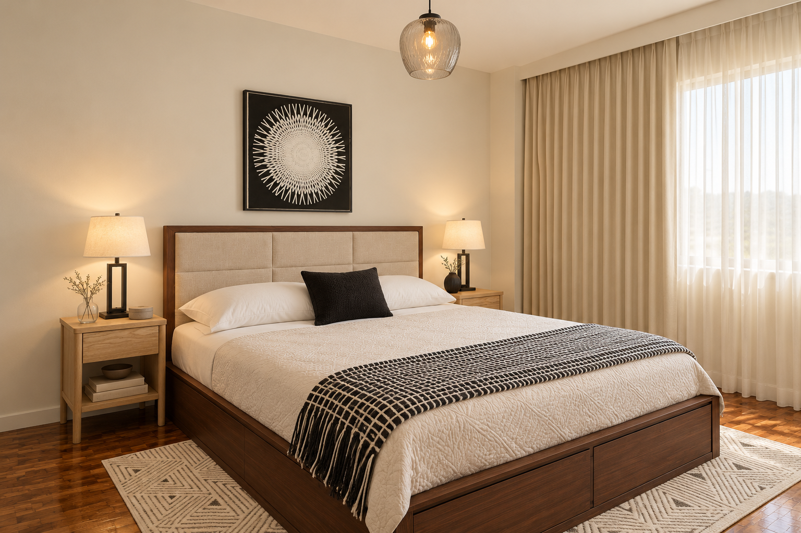

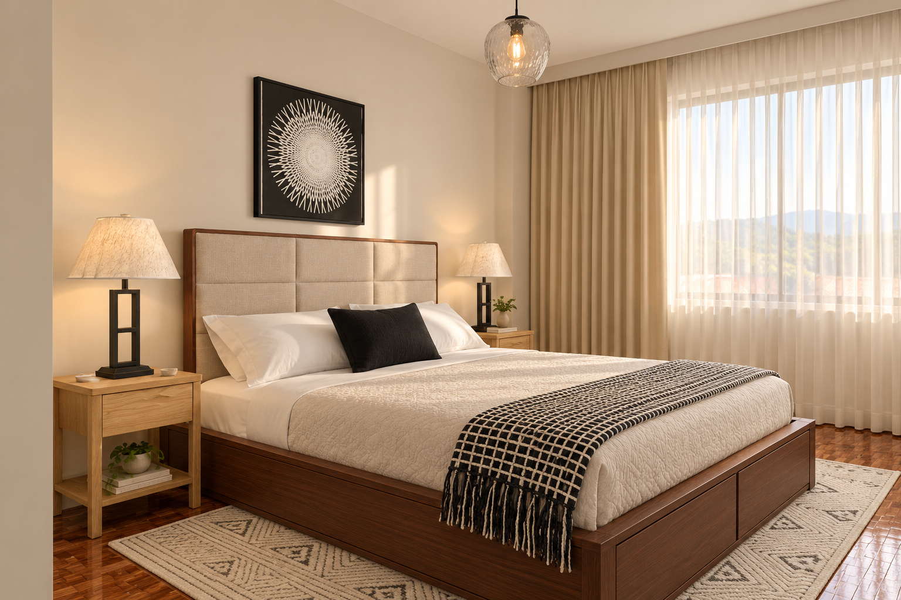

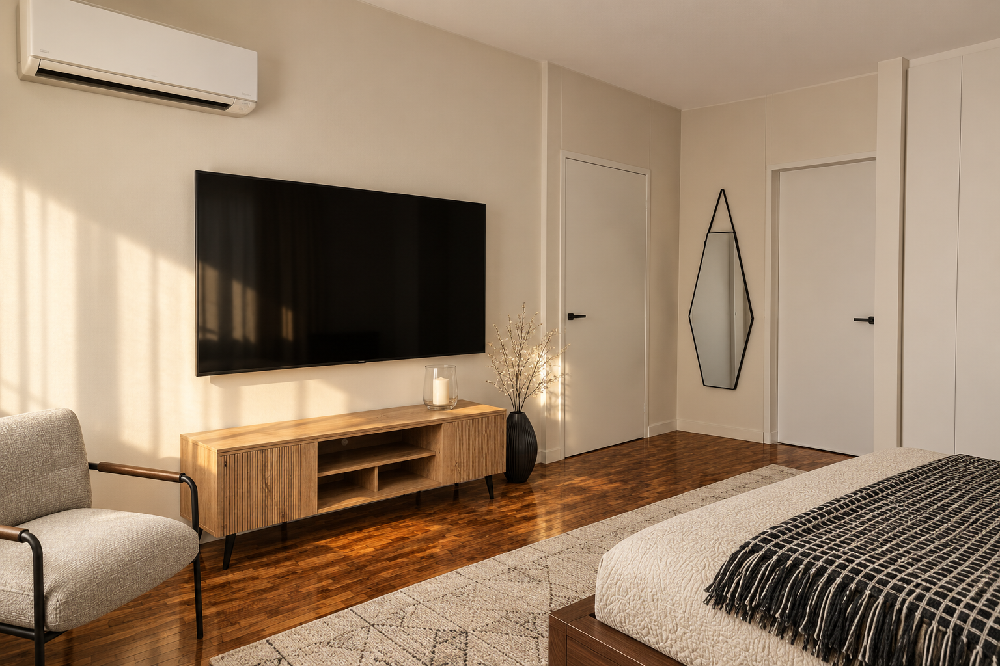
Style renders are AI images (Codex image generation, sketch-to-render) painted over the dimension-led model views below, with the original parquet photo and the supplier product photos as references: a style interpretation of each scheme, not a dimension certification; check every piece against the schedule.

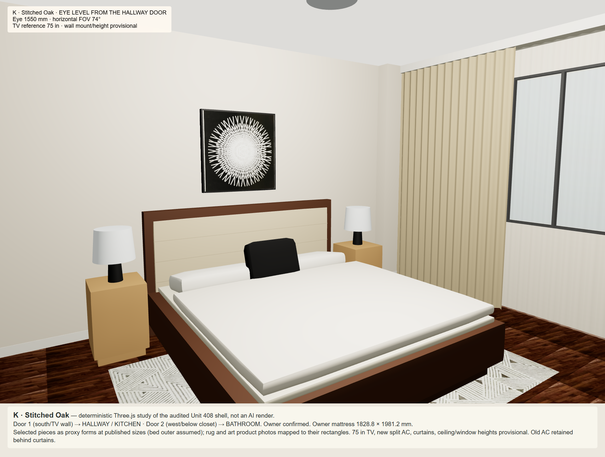

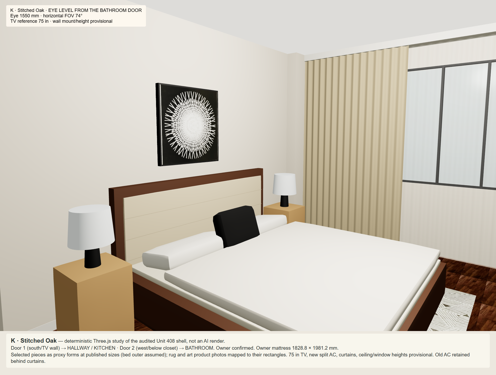

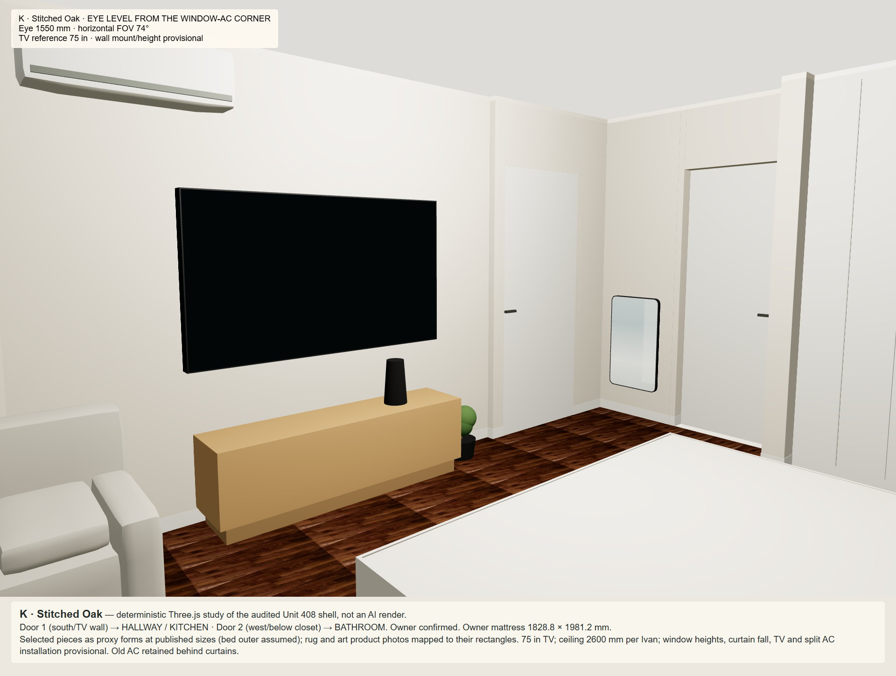
Model views are deterministic Three.js views of the audited Unit 408 shell (parquet, curtains, window, doors, closet, 75 in TV, new split AC) with the selected pieces as proxy forms at published or assumed sizes and the rug and art photos mapped to their rectangles; not AI renders, finishes approximate.
Elevations are scaled supplier-photo collages on the native wall, not renders; heights ILLUS. The reference board contains supplier product photographs.

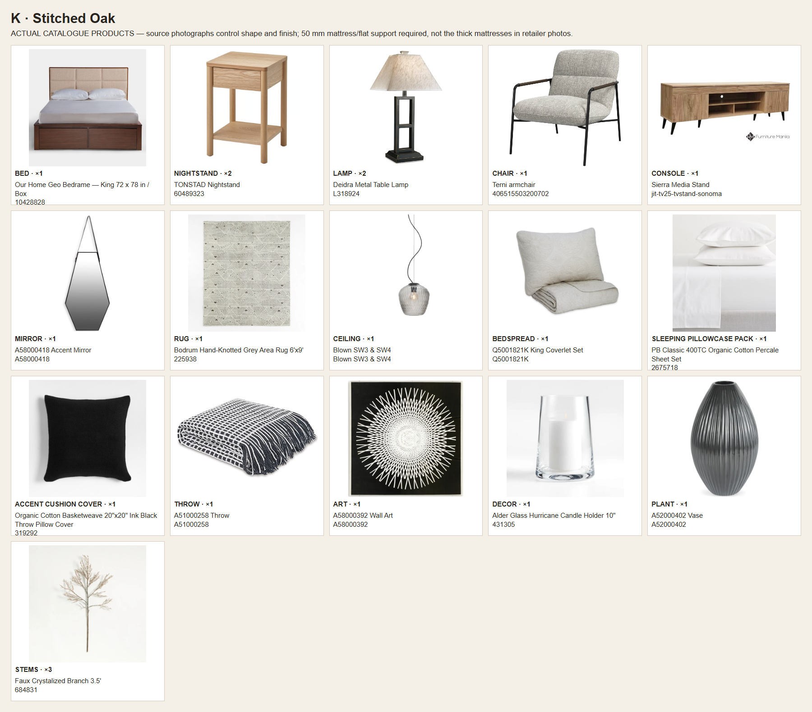

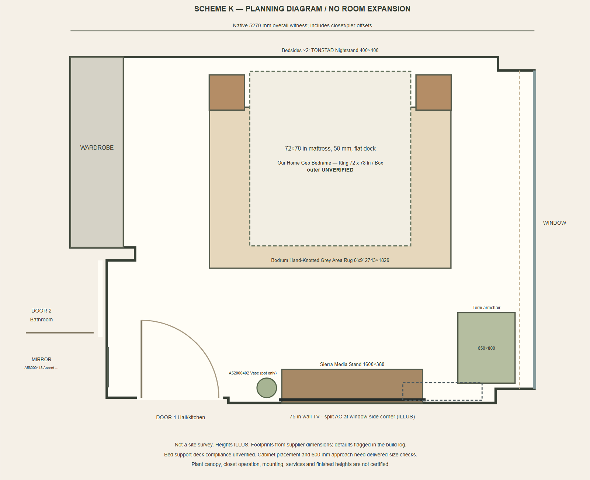
Space & fit
- TONSTAD 400 × 400 × 590 mm; Sierra console 1600 × 380 × 500 mm; Terni 650 × 800 mm.
- Geo King outer size unpublished; drawers along the sides and foot: keep 600 mm clear at the foot for drawer pull.
- Ashley faceted mirror 457 mm wide on the 690 mm return.
Every scheduled itemDirection K · selected pieces15 rows
15 scheduled items
| Starred | Piece & exact variant | Qty / scheme | Unit price | Line price | Source & fulfillment |
|---|---|---|---|---|---|
bedOur Home Geo Bedrame — King 72 x 78 in / BoxKing 72 x 78 in / Box Dimensions & source notesNotes: Box-stitch padded linen-look headboard set in a walnut-stained solid-wood frame; drawer platform (two footboard drawers plus side drawers; the listing's "two built-in bedside tables" do not show as separate tables in the photos, so separate oak bedsides are specified). Kiln-dried solid-wood slats → CONDITIONAL: custom continuous deck (REQUIRED-FLAT-DECK). King outer size not published. Specified with the custom 50 mm mattress (1828.8 × 1981.2 mm) on a continuous flat deck; no box spring, topper or thick pad. Price basis: Our Home Shopify product JSON, King 72×78 variant |
1K | ₱49,455Source price: 2026-10-21 | ₱49,455 | Supplier JSON available=True (read 20 Oct 2026) | Cebu delivery unconfirmedSupplier page ↗ | |
 nightstandTONSTAD NightstandTONSTAD Nightstand, oak veneer, 40x40x59 cm; article 60489323 Dimensions & source notesDimensions (mm): width: 400; depth: 400; height: 590 Notes: IKEA TONSTAD in natural light oak: solid oak top, oak-veneer case, clear lacquer; one closed drawer over an open shelf on round oak legs, 400 × 400 × 590 mm (photo). The Geo listing mentions built-in bedside tables, but none show as separate tables in its photos, so this oak pair is specified. Price basis: Official Philippine product-page price for the complete selected listing/variant; included quantity follows the exact specification variant. Delivery and assembly are additional. |
2K | ₱9,999Source price: 2026-09-10 | ₱19,998 | In stock according to source | Cebu delivery: unconfirmed | price date 2026-09-10 | IKEASupplier page ↗ | |
lampDeidra Metal Table LampDeidra Metal Table Lamp; manufacturer SKU L318924; Default Title Dimensions & source notesNotes: Photo: black/dark-bronze metal open double-rectangle frame on stepped square base, ivory-oatmeal linen tapered square shade. Available. Alt L29 IKEA BARLAST (black steel tube base, white shade, H310, PHP 199; photo .avif, judged on sheet). Both pass exclusions-now.json (id + brand/model). Price basis: Per exact listed official Philippine storefront variant; verify quantity/configuration in listing. Cebu branch quotation is not established. |
2K | ₱9,500Source price: 2026-09-10 | ₱19,000 | online_variant_available_cebu_stock_unconfirmed | Cebu delivery: unconfirmed | price date 2026-09-10 | AshleySupplier page ↗ | |
chairTerni armchairTerni armchair; manufacturer variant/SKU 406515503200702; master 40651550; selected configuration codes: vaMaterialLeg=00750702; vaMaterialUpholstery=3200 Dimensions & source notesDimensions (mm): width: 650; depth: 800 Notes: Black powder-coated tubular steel frame with dark-wood arm caps; deep textured ivory/grey woven upholstery (published colour group White). Catalogue-listed, PHP 115,990. Alt Neue Keyhole Metal Dining Arm Chair (ivory boucle, hand-forged matte black iron legs, 559x597x838, PHP 59,990, available; from the dining fallback list). Price basis: Per exact selected configuration; selected public product price.value, not the lower family starting-price field. Displayed selected RRP; no separate positive beforePrice published. |
1K | ₱115,990Source price: 2026-09-10 | ₱115,990 | Catalog listed | Cebu delivery: unconfirmed | price date 2026-09-10 | BoConceptSupplier page ↗ | |
consoleSierra Media StandSKU jit-tv25-tvstand-sonoma Dimensions & source notesDimensions (mm): width: 1600; depth: 380; height: 500 Notes: Natural oak-look laminate; two fluted closed doors, a fluted flip-down drawer across the top, open centre shelves; tapered black legs. Alt TV070 San Remo (light oak-look, black legs, dims unknown, PHP 3,995). Price basis: Published price for the selected listing variant |
1K | ₱6,500Source price: 2026-09-10 | ₱6,500 | In stock according to source | Cebu delivery: unconfirmed | price date 2026-09-10 | Furniture ManilaSupplier page ↗ | |
mirrorA58000418 Accent MirrorA58000418 Accent Mirror; manufacturer SKU A58000418; Default Title; Black Dimensions & source notesDimensions (mm): width: 457.2; depth: 38.1; height: 800.1 Notes: Thin black metal frame, elongated faceted hexagon, hung from a black strap. Alt Jarves black aluminium rectangle (500x800, PHP 1,200). Price basis: Per exact listed official Philippine storefront variant; verify quantity/configuration in listing. Cebu branch quotation is not established. |
1K | ₱11,000Source price: 2026-09-10 | ₱11,000 | online_variant_available_cebu_stock_unconfirmed | Cebu delivery: unconfirmed | price date 2026-09-10 | AshleySupplier page ↗ | |
rugBodrum Hand-Knotted Grey Area Rug 6'x9'Bodrum Hand-Knotted Grey Area Rug 6'x9'; Single listed configuration; published SKU 225938; Shopify variant 44019020890328 Dimensions & source notesDimensions (mm): width: 1829; depth: 2743 Notes: Photo: ivory ground with charcoal-black hand-knotted linear triangle/chevron graphic, small dark triangle infills. Available. Alt R51 Crate & Barrel Fez Performance hand-tufted 6'x9' (ivory with thin dark-brown Moroccan lines, PHP 67,999). Both pass exclusions-now.json. Price basis: Per selected Philippine listing configuration; set quantities, covers and inserts follow exact title. Published PHP price excludes unquoted delivery/crating/assembly. |
1K | ₱67,195Source price: 2026-09-10 | ₱67,195 | Online listing available | Cebu delivery: unconfirmed | price date 2026-09-10 | Crate & BarrelSupplier page ↗ | |
ceilingBlown SW3 & SW4Silver Lustre / SW3: Ø: 28cm; retailer SKU DS001600; Shopify variant 41309259694246 Dimensions & source notesDimensions (mm): width: 280; depth: 280; height: 280 Notes: Photo: mouth-blown silver-lustre glass with an all-over faceted/diamond-quilted relief, black top cap and black cord. Available. Alt P52 IKEA HÖGVIND 3-lamp pendant (ribbed smoky glass shades, PHP 5,999) - budget fallback. No priced true crystal-prism chandelier exists; Barovier&Toso crystal pieces are unpriced and oversized. Price basis: Per selected retailer listing variant; PHP amount matched public feed and individual product page JSON. |
1K | — | — | Retired 23 Oct 2026 — no added ceiling light (Ivan: "we are not going to add more ceiling lights"). Not in the budget.Supplier page ↗ | |
bedspreadQ5001821K King Coverlet SetQ5001821K King Coverlet Set; manufacturer SKU Q5001821K; Default Title; White Dimensions & source notesNotes: Ashley Q5001821K King coverlet set (coverlet + shams): cotton face, light polyester fill, medallion stitch quilting, a pale cool grey-white in the photo (listed White). Thin, lies flat on the 50 mm mattress. Price basis: Per exact listed official Philippine storefront variant; verify quantity/configuration in listing. Cebu branch quotation is not established. |
1K | ₱33,700Source price: 2026-09-10 | ₱33,700 | online_variant_available_cebu_stock_unconfirmed | Cebu delivery: unconfirmed | price date 2026-09-10 | AshleySupplier page ↗ | |
sleeping pillowcase packPB Classic 400TC Organic Cotton Percale Sheet SetVariant 'King / White'; SKU 2675718 Dimensions & source notesNotes: Organic cotton percale sheet set, Ivory listed (order Ivory/King); supplies the pair of standard cases plus sheets. Photo is the generic white set shot. Price basis: Official online store price for this exact variant (products.json variant 33915051180171: price 14500, compare-at none); per listed unit as titled |
1K | ₱14,500Source price: 2026-10-20 | ₱14,500 | online_variant_available_cebu_stock_unconfirmed | Cebu delivery: unconfirmed | price date 2026-10-20 | Pottery BarnSupplier page ↗ | |
accent cushion coverOrganic Cotton Basketweave 20"x20" Ink Black Throw Pillow CoverOrganic Cotton Basketweave 20"x20" Ink Black Throw Pillow Cover; Ink Black; published SKU 319292; Shopify variant 50239581028568 Dimensions & source notesNotes: 20x20 in, Ink Black, 100% organic cotton basketweave Price basis: Per selected Philippine listing configuration; set quantities, covers and inserts follow exact title. Published PHP price excludes unquoted delivery/crating/assembly. |
1K | ₱5,499Source price: 2026-09-10 | ₱5,499 | Online listing available | Cebu delivery: unconfirmed | price date 2026-09-10 | Crate & BarrelSupplier page ↗ | |
throwA51000258 ThrowA51000258 Throw; manufacturer SKU A51000258; Default Title; Black/White Dimensions & source notesDimensions (mm): width: 1299.972; depth: 2350.008; height: 9.906 Notes: Black/White, 130x235 cm Price basis: Per exact listed official Philippine storefront variant; verify quantity/configuration in listing. Cebu branch quotation is not established. |
1K | ₱3,800Source price: 2026-09-10 | ₱3,800 | online_variant_available_cebu_stock_unconfirmed | Cebu delivery: unconfirmed | price date 2026-09-10 | AshleySupplier page ↗ | |
artA58000392 Wall ArtA58000392 Wall Art; manufacturer SKU A58000392; Default Title; White/Black Dimensions & source notesDimensions (mm): width: 800.1; depth: 50.8; height: 800.1 Notes: 800x800 mm white line-mandala on a black field, black frame (photo). Price basis: Per exact listed official Philippine storefront variant; verify quantity/configuration in listing. Cebu branch quotation is not established. |
1K | ₱22,800Source price: 2026-09-10 | ₱22,800 | online_variant_available_cebu_stock_unconfirmed | Cebu delivery: unconfirmed | price date 2026-09-10 | AshleySupplier page ↗ | |
decorAlder Glass Hurricane Candle Holder 10"Alder Glass Hurricane Candle Holder 10"; Single listed configuration; published SKU 431305; Shopify variant 44463552397528 Dimensions & source notesDimensions (mm): width: 179.832; depth: 179.832; height: 249.936 Notes: Clear glass hurricane, 250 mm, with a pillar candle (photo). Price basis: Per selected Philippine listing configuration; set quantities, covers and inserts follow exact title. Published PHP price excludes unquoted delivery/crating/assembly. |
1K | ₱4,499Source price: 2026-09-10 | ₱4,499 | Online listing available | Cebu delivery: unconfirmed | price date 2026-09-10 | Crate & BarrelSupplier page ↗ | |
plantA52000402 VaseA52000402 Vase; manufacturer SKU A52000402; Default Title; Black Dimensions & source notesDimensions (mm): width: 222.25; depth: 222.25; height: 374.65 Notes: Vase standing on the floor beside the console, holding the stems. Three glittered crystal-effect bare branches (1016 mm) in the black Ashley A52000402 vase. Price basis: Per exact listed official Philippine storefront variant; verify quantity/configuration in listing. Cebu branch quotation is not established. |
1K | ₱6,700Source price: 2026-09-10 | ₱6,700 | online_variant_available_cebu_stock_unconfirmed | Cebu delivery: unconfirmed | price date 2026-09-10 | AshleySupplier page ↗ | |
stemsFaux Crystalized Branch 3.5'Faux Crystalized Branch 3.5'; Single listed configuration; published SKU 684831; Shopify variant 43898179944664 Dimensions & source notesDimensions (mm): width: 254; depth: 1016; height: 152.4 Notes: Three glittered crystal-effect bare branches (1016 mm) in the black Ashley A52000402 vase. Price basis: Per selected Philippine listing configuration; set quantities, covers and inserts follow exact title. Published PHP price excludes unquoted delivery/crating/assembly. |
3K | ₱999Source price: 2026-09-10 | ₱2,997 | Online listing available | Cebu delivery: unconfirmed | price date 2026-09-10 | Crate & BarrelSupplier page ↗ |


Direction L
Flax Wine
Our Home Fidel spindle bed in warm mahogany dressed in undyed faux-linen; knotty-pine PS 2026 bedsides and a white-stain (limed) HEMNES console with a light pine top; ULRIKSBERG rattan armchair; KOMPISHÄNG pine floor mirror; Alphalux cane-webbing table lamps and a wide rattan NARRKOLV dome; striped jute TIOKRONA rug; Mo's Crib woven wall art; wine as the accent in a Bubble Wool cushion, a burgundy peony bunch and an ombré wine-glass vase; a Beane woven banana-leaf basket. Flax dominant, wine accent, woven light.

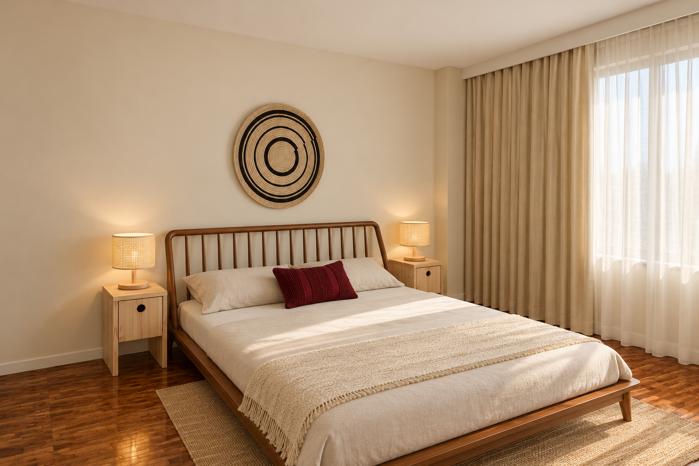

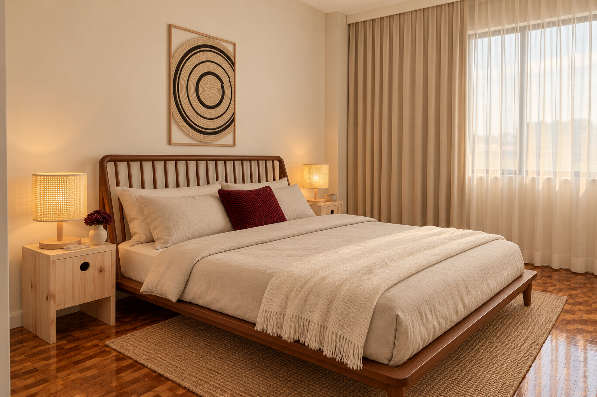

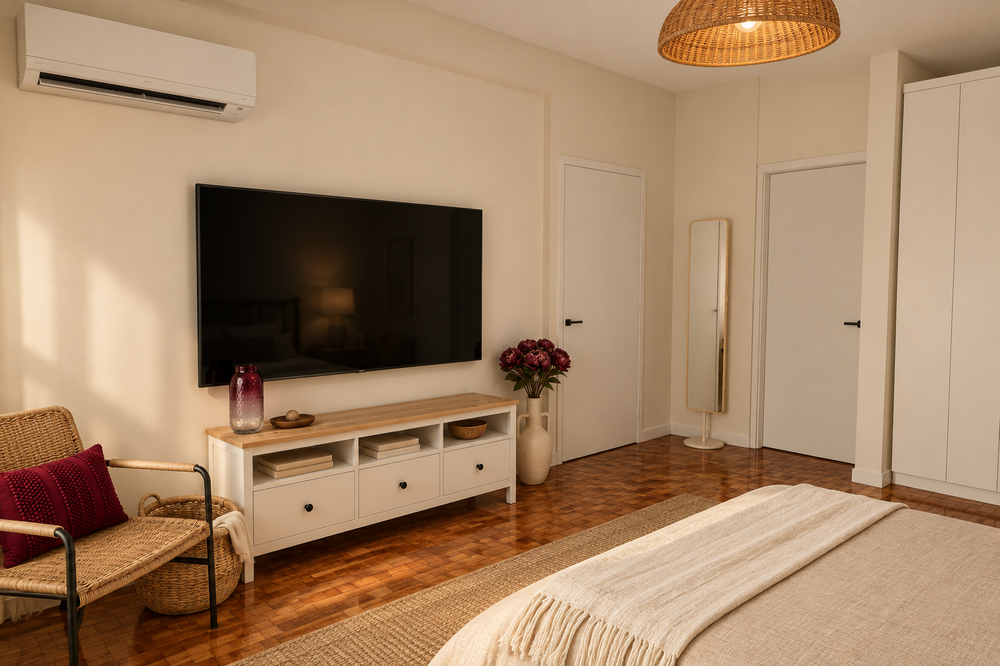
Style renders are AI images (Codex image generation, sketch-to-render) painted over the dimension-led model views below, with the original parquet photo and the supplier product photos as references: a style interpretation of each scheme, not a dimension certification; check every piece against the schedule.

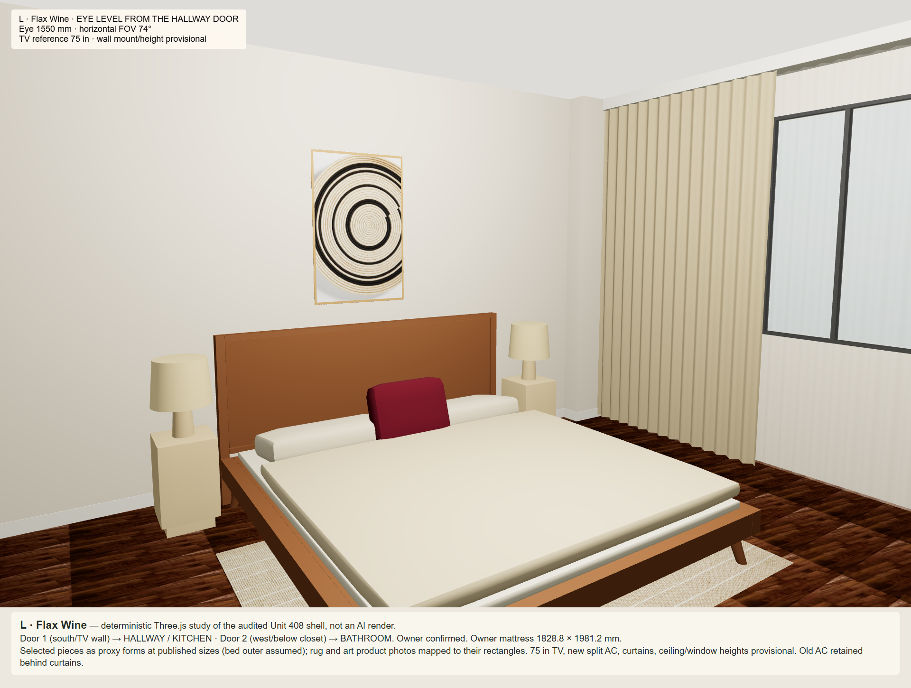

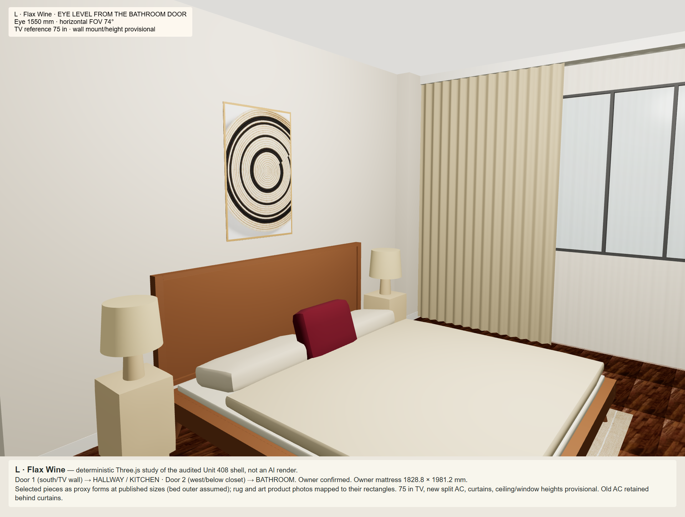

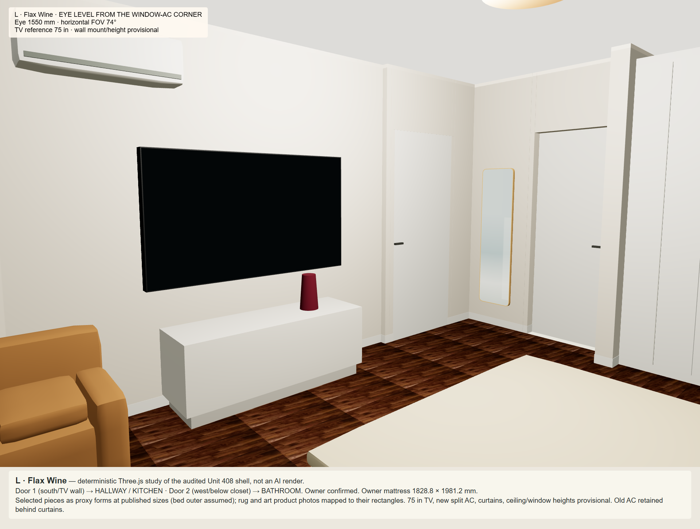
Model views are deterministic Three.js views of the audited Unit 408 shell (parquet, curtains, window, doors, closet, 75 in TV, new split AC) with the selected pieces as proxy forms at published or assumed sizes and the rug and art photos mapped to their rectangles; not AI renders, finishes approximate.
Elevations are scaled supplier-photo collages on the native wall, not renders; heights ILLUS. The reference board contains supplier product photographs.

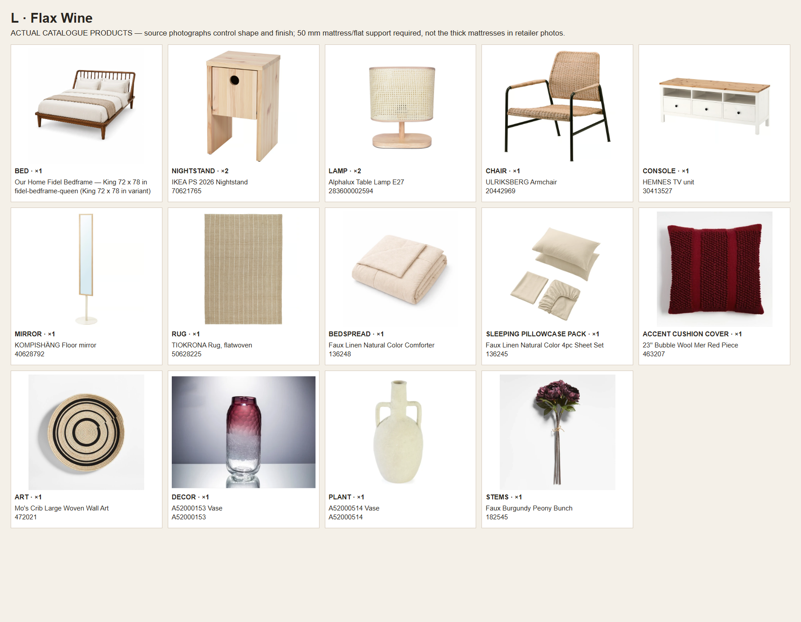

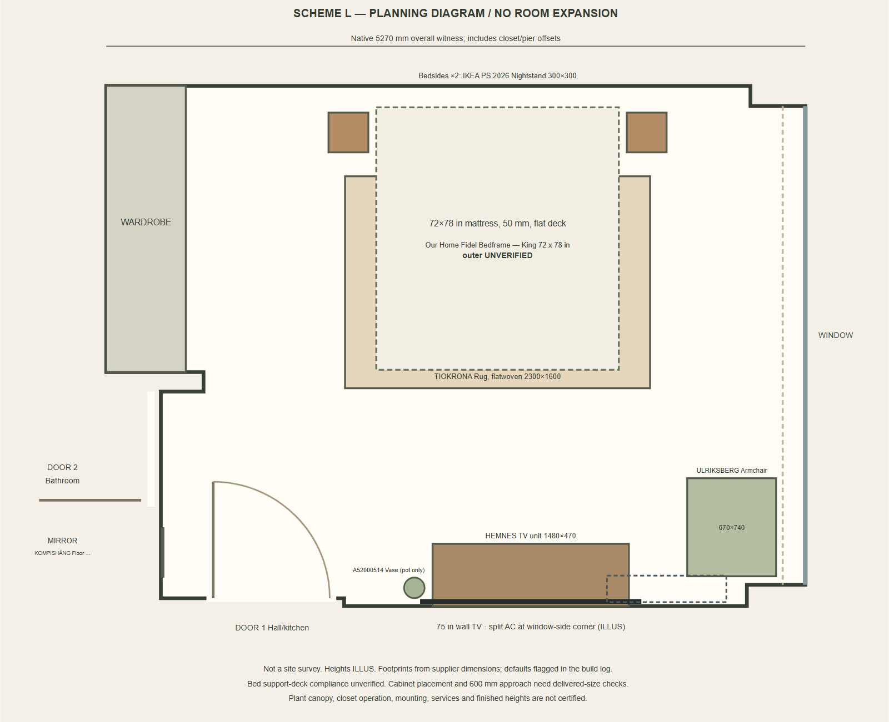
Space & fit
- PS 2026 bedsides only 300 mm wide (a narrow pair); HEMNES 1480 × 470 × 570 mm.
- ULRIKSBERG 670 × 740 mm in the window-side corner.
- KOMPISHÄNG 380 mm stand mirror against the 690 mm return. Fidel King outer size unpublished.
Every scheduled itemDirection L · selected pieces16 rows
16 scheduled items
| Starred | Piece & exact variant | Qty / scheme | Unit price | Line price | Source & fulfillment |
|---|---|---|---|---|---|
bedOur Home Fidel Bedframe — King 72 x 78 inKing 72 x 78 in Dimensions & source notesNotes: Solid mahogany mid-century platform bed in a warm medium brown: high open-spindle headboard, low rounded frame, tapered legs. Found by the bounded live search (research/king-beds/SEARCH-LOG.md); not limed, the warm anchor under flax bedding. "Platform bed" published but slats vs solid deck not stated → UNVERIFIED — not ready to order; REQUIRED-FLAT-DECK applies. King outer size and rail height not published. Specified with the custom 50 mm mattress (1828.8 × 1981.2 mm) on a continuous flat deck; no box spring, topper or thick pad. Price basis: Our Home Shopify collection JSON (bounded live search, 21 Oct 2026) |
1L | ₱38,655Source price: 2026-10-21 | ₱38,655 | Our Home collection JSON read 21 Oct 2026 14:23: available | price PHP 38,655 as captured (compare-at 42,950); King variant price to confirm (product JSON re-read rate-limited) | Cebu delivery unconfirmedSupplier page ↗ | |
 nightstandIKEA PS 2026 NightstandIKEA PS 2026 Nightstand, pine/with flip-down door, 30x30x50 cm; article 70621765 Dimensions & source notesDimensions (mm): width: 300; depth: 300; height: 500 Notes: Solid pine, lightly tinted clear lacquer (pale, knotty, limed look); flip-down door with a round finger hole, fully closed cube on slab sides. Narrow at 300 mm (flagged under 350). Alt Nat13 Night Table (natural pale rubberwood/veneer, 2 drawers with routed pulls, splayed legs, dims unknown, PHP 3,500). Price basis: Official Philippine product-page price for the complete selected listing/variant; included quantity follows the exact specification variant. Delivery and assembly are additional. |
2L | ₱3,999Source price: 2026-09-10 | ₱7,998 | In stock according to source | Cebu delivery: unconfirmed | price date 2026-09-10 | IKEASupplier page ↗ | |
lampAlphalux Table Lamp E27Item 283600002594; model 2025-8-247y Dimensions & source notesNotes: Photo: oval drum shade of open-weave natural cane/rattan webbing with linen-coloured binding, pale solid-wood stem and oval base. Available. Alt L139 IKEA VARPTROSS (lacquered bamboo slat shade, H260, PHP 1,999). Price basis: Official online price for item 283600002594 (Wilcon GraphQL final_price 890, regular_price 890); per listed unit |
2L | ₱890Source price: 2026-10-20 | ₱1,780 | online_variant_available_cebu_stock_unconfirmed | Cebu delivery: unconfirmed | price date 2026-10-20 | AlphaluxSupplier page ↗ | |
 chairULRIKSBERG ArmchairULRIKSBERG Armchair, rattan/anthracite; article 20442969 Dimensions & source notesDimensions (mm): width: 670; depth: 740; height: 760 Notes: Woven rattan seat and back on a slim black steel frame with rattan-wrapped arms (photo). HOLMSTA and then AGEN were claimed first by set MNO. Price basis: Official Philippine product-page price for the complete selected listing/variant; included quantity follows the exact specification variant. Delivery and assembly are additional. |
1L | ₱6,999Source price: 2026-09-10 | ₱6,999 | In stock according to source | Cebu delivery: unconfirmed | price date 2026-09-10 | IKEASupplier page ↗ | |
 consoleHEMNES TV unitTV unit, white stain/light brown, 148x47x57 cm (58 1/4x18 1/2x22 1/2 ") Dimensions & source notesDimensions (mm): width: 1480; depth: 470; height: 570 Notes: Solid pine; white-stain (limed) body with a light-brown stained knotty-pine top; three closed drawers with black knobs (swap to wood or rattan knobs) under three open cubbies. Alt FR TV Stand 202084 (brushed-ash veneer, drawers, NO PRICE, dims unknown). Price basis: Per listed item/combination for exact article number |
1L | ₱14,999Source price: 2026-09-08 | ₱14,999 | Available for delivery | Cebu delivery: unconfirmed | price date 2026-09-08 | IKEASupplier page ↗ | |
 mirrorKOMPISHÄNG Floor mirrorKOMPISHÄNG Floor mirror, pine, 38 cm; article 40628792 Dimensions & source notesDimensions (mm): width: 380; depth: 380 Notes: Tall narrow full-length mirror with a thin solid-pine frame (clear lacquer) on a slim cream steel pole and round base plate; freestanding. Catalogue listed. Alt Ashley A58000529 Accent Mirror (round openwork water-hyacinth sunburst frame, small centre glass, PHP 12,100, available; WIDTH UNKNOWN, so confirm it is 600 mm or less). Price basis: Official Philippine product-page price for the complete selected listing/variant; included quantity follows the exact specification variant. Delivery and assembly are additional. |
1L | ₱4,999Source price: 2026-09-10 | ₱4,999 | Catalog listed | Cebu delivery: unconfirmed | price date 2026-09-10 | IKEASupplier page ↗ | |
 rugTIOKRONA Rug, flatwovenTIOKRONA Rug, flatwoven, natural, 160x230 cm; article 50628225 Dimensions & source notesDimensions (mm): width: 1600; depth: 2300 Notes: IKEA TIOKRONA 160 × 230 cm, 100 % jute flatweave in natural straw with bold off-white vertical stripes (photo). Available. Price basis: Official Philippine product-page price for the complete selected listing/variant; included quantity follows the exact specification variant. Delivery and assembly are additional. |
1L | ₱2,999Source price: 2026-09-10 | ₱2,999 | In stock according to source | Cebu delivery: unconfirmed | price date 2026-09-10 | IKEASupplier page ↗ | |
 ceilingNARRKOLV Pendant lampNARRKOLV Pendant lamp, rattan, 56 cm; article 70595870 Dimensions & source notesDimensions (mm): height: 140 Notes: Photo: wide shallow dome of stained natural rattan weave, black cup. Available. Alt P90 Crate & Barrel Plantsman (handwoven natural arurog dome, satin black iron, PHP 10,005). Price basis: Official Philippine product-page price for the complete selected listing/variant; included quantity follows the exact specification variant. Delivery and assembly are additional. |
1L | — | — | Retired 23 Oct 2026 — no added ceiling light (Ivan: "we are not going to add more ceiling lights"). Not in the budget.Supplier page ↗ | |
bedspreadFaux Linen Natural Color ComforterVariant 'Comforter Double-Queen'; SKU 136248 Dimensions & source notesNotes: Mandaue Foam faux-linen comforter in Natural (undyed flax look), channel-quilted, light fill (photo). Listed Double-Queen; on the thin 50 mm King mattress it covers the top with a short drop — King size to confirm. Price basis: Official online store price for this exact variant (products.json variant 46563212624050: price 2360, compare-at 2360); per listed unit as titled |
1L | ₱2,360Source price: 2026-10-20 | ₱2,360 | online_variant_available_cebu_stock_unconfirmed | Cebu delivery: unconfirmed | price date 2026-10-20 | Mandaue FoamSupplier page ↗ | |
sleeping pillowcase packFaux Linen Natural Color 4pc Sheet SetVariant 'Queen Sheet Set'; SKU 136245 Dimensions & source notesNotes: Mandaue Foam faux-linen 4-pc sheet set in Natural, Queen: used for its two flax pillowcases; the fitted sheet is not needed (the shared DVALA flat sheet wraps the 50 mm mattress). Price basis: Official online store price for this exact variant (products.json variant 46563209478322: price 2520, compare-at 2520); per listed unit as titled |
1L | ₱2,520Source price: 2026-10-20 | ₱2,520 | online_variant_available_cebu_stock_unconfirmed | Cebu delivery: unconfirmed | price date 2026-10-20 | Mandaue FoamSupplier page ↗ | |
accent cushion cover23'' Bubble Wool Mer Red Piece23'' Bubble Wool Mer Red Piece; Single listed configuration; published SKU 463207; Shopify variant 43898179191000 Dimensions & source notesNotes: 23 in, deep wine/burgundy wool bobble-knit with flat vertical bands (photo); listing title is 'Bubble Wool Mer Red Piece', so confirm cover-only vs filled. Needs a 60 cm insert, not the 50 cm one. Price basis: Per selected Philippine listing configuration; set quantities, covers and inserts follow exact title. Published PHP price excludes unquoted delivery/crating/assembly. |
1L | ₱4,599Source price: 2026-09-10 | ₱4,599 | Online listing available | Cebu delivery: unconfirmed | price date 2026-09-10 | Crate & BarrelSupplier page ↗ | |
throwCasual Textured Fringe 70"x55" Arctic Ivory Throw BlanketCasual Textured Fringe 70"x55" Arctic Ivory Throw Blanket; Arctic Ivory; published SKU 318673; Shopify variant 51402096443608 Dimensions & source notesDimensions (mm): width: 1397; depth: 1778; height: 4.064 Notes: 55% European Flax linen / 45% viscose, 55x70 in, fringed, Arctic Ivory Price basis: Per selected Philippine listing configuration; set quantities, covers and inserts follow exact title. Published PHP price excludes unquoted delivery/crating/assembly. |
1L | ₱9,599Source price: 2026-09-10 | ₱9,599 | Online listing available | Cebu delivery: unconfirmed | price date 2026-09-10 | Crate & BarrelSupplier page ↗ | |
artMo's Crib Large Woven Wall ArtMo's Crib Large Woven Wall Art; Single listed configuration; published SKU 472021; Shopify variant 44253408100568 Dimensions & source notesDimensions (mm): width: 660.4; depth: 6.35 Notes: Large round woven wall art (natural fibre coil with dark spiral bands), Filipino woven craft by Mo's Crib; hung over the headboard as the "wicker" statement. The wine-toned canvas (Ethan Allen Marsala Bouquet) has no price or photo in the catalogue, so the wine stays in the cushion, stems and glass vase. Price basis: Per selected Philippine listing configuration; set quantities, covers and inserts follow exact title. Published PHP price excludes unquoted delivery/crating/assembly. |
1L | ₱19,915Source price: 2026-09-10 | ₱19,915 | Online listing available | Cebu delivery: unconfirmed | price date 2026-09-10 | Mo's CribSupplier page ↗ | |
decorA52000153 VaseA52000153 Vase; manufacturer SKU A52000153; Default Title; Transparent Red Dimensions & source notesDimensions (mm): width: 139.7; depth: 1003.3; height: 330.2 Notes: Glass vase in burgundy-to-clear ombré with a hammered texture, about 330 mm tall (photo; listed 'Transparent Red'). Price basis: Per exact listed official Philippine storefront variant; verify quantity/configuration in listing. Cebu branch quotation is not established. |
1L | ₱8,000Source price: 2026-09-10 | ₱8,000 | online_variant_available_cebu_stock_unconfirmed | Cebu delivery: unconfirmed | price date 2026-09-10 | AshleySupplier page ↗ | |
basketBeane Basket by Jake ArnoldBeane Basket by Jake Arnold; Single listed configuration; published SKU 252238; Shopify variant 43717493227736 Dimensions & source notesDimensions (mm): height: 381 Notes: Beane basket by Jake Arnold: round-bellied woven banana-leaf and rattan basket (photo) holding the flax throw beside the armchair. IKEA SNIDAD has no fetchable photo. Price basis: Per selected Philippine listing configuration; set quantities, covers and inserts follow exact title. Published PHP price excludes unquoted delivery/crating/assembly. |
1L | ₱3,845Source price: 2026-09-10 | ₱3,845 | Online listing available | Cebu delivery: unconfirmed | price date 2026-09-10 | Crate & BarrelSupplier page ↗ | |
plantA52000514 VaseA52000514 Vase; manufacturer SKU A52000514; Default Title; Yellow Dimensions & source notesDimensions (mm): width: 154.94; depth: 154.94; height: 304.8 Notes: Vase standing on the floor beside the console, holding the stems. One faux burgundy peony bunch (762 mm) in the rustic cream Ashley A52000514 vase. Price basis: Per exact listed official Philippine storefront variant; verify quantity/configuration in listing. Cebu branch quotation is not established. |
1L | ₱6,700Source price: 2026-09-10 | ₱6,700 | online_variant_available_cebu_stock_unconfirmed | Cebu delivery: unconfirmed | price date 2026-09-10 | AshleySupplier page ↗ | |
stemsFaux Burgundy Peony BunchFaux Burgundy Peony Bunch; Single listed configuration; published SKU 182545; Shopify variant 49052462055640 Dimensions & source notesDimensions (mm): width: 304.8; depth: 304.8; height: 762 Notes: One faux burgundy peony bunch (762 mm) in the rustic cream Ashley A52000514 vase. Price basis: Per selected Philippine listing configuration; set quantities, covers and inserts follow exact title. Published PHP price excludes unquoted delivery/crating/assembly. |
1L | ₱1,729Source price: 2026-09-10 | ₱1,729 | Online listing available | Cebu delivery: unconfirmed | price date 2026-09-10 | Crate & BarrelSupplier page ↗ |


Your shortlist
Starred pieces
Star ☆ any piece in the schedules above and it is listed here by direction with a running total. Stars are saved in this browser only. Use Copy link to send them to someone else (the link opens with the same stars) or Copy as text for a message.
No starred pieces yet.
Plain-text list
Compare the complete plan
Budgets, with the open costs visible
Quoted work and fulfillment remain unresolved. The planning ranges include the allowances below, plus 10% contingency, rounded up to ₱1,000.
| Per chosen scheme | JWhite Gallery | KStitched Oak | LFlax Wine |
|---|---|---|---|
| Selected design pieces | ₱104,349 | ₱383,633 | ₱137,696 |
| Common essentials & room treatments | ₱119,924.50 | ₱120,024.50 | ₱119,924.50 |
| Priced schedule subtotal | ₱224,273.50 | ₱503,657.50 | ₱257,620.50 |
| Working planning range | ₱286,000 to ₱340,000 | ₱593,000 to ₱647,000 | ₱322,000 to ₱376,000 |
Planning allowances ₱35,000–₱84,000 before contingency
| Work or provision | Low | High | Basis & limits |
|---|---|---|---|
| Cebu freight,delivery and handling | ₱5,000 | ₱15,000 | Planning allowance only; no shipping rates/address allocation obtained. Overseas freight not included. |
| Split-AC installation and normal pipe/electrical provision | ₱10,000 | ₱20,000 | Planning allowance only; actual pipe length,capacity,condensate path,condenser mounting and building permissions unmeasured. |
| TV/mirror/art/ceiling fixture installation and assembly | ₱5,000 | ₱10,000 | Planning allowance only; installer must specify anchors and verify substrate. Includes no structural rebuilding. |
| Paint touch-up and site coordination | ₱5,000 | ₱12,000 | Estimator reserve, not a contractor quote. Optional curtain LED is not selected, displayed or included as a retail item. |
| REQUIRED: custom50mm mattress,72×78in | ₱4,000 | ₱12,000 | Provisional reserve only,not a manufacturer price. Exact finished50mm thickness,cover and foam specification need supplier acceptance and quotation. Replaces rejected8in mattress; not added on top of it. |
| REQUIRED unless existing deck proven compliant: custom continuous flat support | ₱6,000 | ₱15,000 | Provisional reserve only,not a contractor quote. All current bed supports unverified. Must resolve structure,bearing,fixings,recess/rail height and bed warranty. No exposed slats accepted. |
Shared foundations
Common essentials & fixed room treatments
The fixed curtains and listed technical essentials are common room provisions. Scheme letters show where each row applies; quantities are per chosen scheme.
Every scheduled itemCommon room schedule14 rows · 2 quote required
14 scheduled items
| Starred | Piece & exact variant | Qty / scheme | Unit price | Line price | Source & fulfillment |
|---|---|---|---|---|---|
 technical75-inch Crystal UHD TV UA75U8520HGXXP10179413 Dimensions & source notesNotes: TV is wall mounted; feet not used; published VESA400x300,21.6kg without stand. |
1J/K/L | ₱51,990 | ₱51,990 | Live retailer available=true; Cebu branch allocation unconfirmedSupplier page ↗ | |
 technicalTCL 1.5 HP split inverter TAC-13CSD/KEI210177771 Dimensions & source notesNotes: Equipment-only reference. 1.5HP is a budget candidate, not a heat-load approval; installer must confirm capacity, piping, drainage, condenser location and corner clearances. |
1J/K/L | ₱19,631.50 | ₱19,631.50 | Live retailer available=true; Cebu branch allocation unconfirmedSupplier page ↗ | |
 technicalTrue Vision extra-large TV wall mount TV73-69F, 60–120 in, 120 kg, VESA 400×300 listedTV73-69F (manufacturer product 5959) Dimensions & source notesNotes: Replaces the unavailable Westinghouse reference. Published 35×1005×625 mm; installer to confirm substrate, anchors, Samsung screw/spacer lengths and rear connector access. Price basis: Manufacturer current Store API price 2,990 (sale price not applied) |
1J/K/L | ₱2,990Source price: 2026-10-20 | ₱2,990 | Manufacturer store API is_in_stock:true, is_purchasable:true (technical research 20 Oct 2026) | Cebu delivery not checkedSupplier page ↗ | |
technicalMaster bedroom drapes + sheers,2 tracks,inverted pleats16 Oct2026 supplier quotation Dimensions & source notesNotes: Quoted master-bedroom discounted row. Davies Beige+voile remain owner selected, but this quote does not name exact fabric SKU; no claim of verified fabric match. Install/travel terms need reconfirmation. |
1J/K/L | ₱36,720 | ₱36,720 | DATED QUOTE - fabric identity and current scope require reconfirmationSupplier quote pending | |
technicalFinished valance/pelmet:1 of6 quoted areas22800/6 allocation Dimensions & source notesNotes: Equal allocation of quoted whole-apartment valance total22800 across6 areas. Not an independently quoted per-room price. |
1J/K/L | ₱3,800 | ₱3,800 | PLANNING ALLOCATION - supplier has not separately quoted this roomSupplier quote pending | |
technicalFour curtain pull sticks:1 of6 quoted areas11400/6 allocation Dimensions & source notesNotes: Quoted whole-apartment24sticks total11400; allocate4sticks1900. Confirm length/quantity and no-cord operation. |
1J/K/L | ₱1,900 | ₱1,900 | PLANNING ALLOCATION - supplier has not separately quoted this roomSupplier quote pending | |
 technicalDVALA flat sheet, white806.211.71 Dimensions & source notesNotes: Neatly wrap50mm mattress; not an elastic fitted-sheet claim.2400×2600 less1828.8×1981.2 leaves285.6mm per side and309.4mm per end before50mm depth; ample proposed tuck. Catalogue says63–71in beds; this is a proposed thin-mattress flat wrap, verify onsite. No thick mattress/duvet inferred. |
1J/K/L | ₱699 | ₱699 | https://schema.org/InStoreOnly; Cebu allocation unconfirmedSupplier page ↗ | |
 technicalLAPPTATEL pillow, side/back sleeper604.603.72 Dimensions & source notesNotes: 2individual50×80cm sleeping pillow inserts per scheme; no health or comfort certification. |
2J/K/L | ₱399 | ₱798 | https://schema.org/InStock; Cebu allocation unconfirmedSupplier page ↗ | |
 technicalSTOPP FILT anti-slip rug underlay301.830.84 Dimensions & source notesNotes: Two165×235cm sheets per rug, cut/combine flat beneath200×300cm rug to appropriate inset.190×280single-sheet variant90550205 wasOutOfStock and excluded. Current165×235 isInStoreOnly;Cebu fulfillment unconfirmed. |
2J/K/L | ₱499 | ₱998 | https://schema.org/InStoreOnly; Cebu allocation unconfirmedSupplier page ↗ | |
 technicalINNER cushion insert, white402.621.94 Dimensions & source notesNotes: One INNER 50×50 cm insert for the scheme cushion cover (J, K and L each have one cover). |
1J/K/L | ₱200 | ₱200 | https://schema.org/InStock; Cebu allocation unconfirmedSupplier page ↗ | |
| 2J/L | ₱99 | ₱198 | https://schema.org/InStoreOnly; Cebu allocation unconfirmedSupplier page ↗ | ||
 technicalSOLHETTA E14 opal LED bulb 250 lm, 2-piece pack305.839.87 Dimensions & source notesNotes: For the two Deidra lamps; socket size not published — check the lamp base (E14 or E27) before buying. |
2K | ₱149 | ₱298 | https://schema.org/InStoreOnly; Cebu allocation unconfirmedSupplier page ↗ | |
technicalMade-to-order mattress, finished 50 mm × 1828.8 × 1981.2 mmExact specification requires supplier acceptance Dimensions & source notesNotes: Real MTO service, not a verified off-the-shelf 50mm model. Reserve ₱4,000–12,000 below; never treat as free. |
1J/K/L | Quote required | Quote required | QUOTE REQUIRED; exact finished thickness not yet acceptedSupplier page ↗ | |
technicalContinuous flat bed support and any frame adaptationBed-specific engineered specification required Dimensions & source notesNotes: No slats or gaps at contact surface. Confirm load, bearing, fixings, seams, recess/rail height, finished mattress exposure, moisture requirements and warranty. Reserve ₱6,000–15,000 below. |
1J/K/L | Quote required | Quote required | QUOTE REQUIRED; all three frames conditionalSupplier quote pending |

Before ordering
Resolve these procurement gates
- No scheme is purchase-ready until the bed supplier accepts the exact 50 mm mattress (1828.8 × 1981.2 mm) on a continuous flat deck. Geo (K) has slats, so a custom deck is required; Gibson (J) and Fidel (L) do not publish slats vs solid deck. Outer sizes are unpublished for all three frames.
- Availability: Gibson King was listed unavailable on the 20 Oct capture and the Nitori stand mirror (J) is "unavailable online"; confirm stock before choosing J.
- Prices are frozen pass-3 catalogue references (snapshot 20 Oct 2026) with each line's own price date; the Our Home beds were read from supplier JSON on 20 Oct 2026 (Fidel King from the collection JSON). Product existence and Cebu fulfilment require checkout confirmation.
- Colour and size gates: J Vesper quilt and L faux-linen comforter are Full/Queen or Double-Queen sizes (short drop on the thin mattress); FAGERBACKEN dimensions unpublished; Kolya, Alphalux cane and Deidra lamp sockets to confirm.
- TV mount is the True Vision TV73-69F (in stock per manufacturer API); installer to confirm substrate, anchors and Samsung fixings.
- Curtain ₱42,420 is the carried 16 October quote reference: ₱36,720 master treatment plus ₱3,800 valance and ₱1,900 sticks allocations. Remeasurement quote required.
- Trade/freight/mattress/deck reserves total ₱35,000–84,000 as estimator allowances, not supplier quotations. 10 % contingency added, totals rounded up to the next ₱1,000.
- Boards, measured plans and the model views are the acceptance basis. The style renders are AI studies painted over the model views, not photographs; check every piece against the schedule.
Source notes
- Catalogue of record: frozen Airtable pass-3 snapshot (9,853 products / 9,901 offers, LIVE-PASS3-READ-RECEIPT.json). No live Airtable read in this run; no Airtable writes.
- 47 visible selections across J/K/L, each with a supplier photo copied into dist/assets/products; no visible model or model family repeats across J, K, L, the twelve earlier schemes or the parallel GHI and MNO sets (UNIQUENESS-MATRIX.md).
- Product photos are unaltered retailer references, except the J gallery card, a 3 × 2 composite of the Jahn frame photo. Plans use published dimensions where available and flag defaults where not.
- PH retailer routes establish real-product sourcing. Cebu fulfilment requires checkout/branch confirmation; no supplier contact or order has been made.